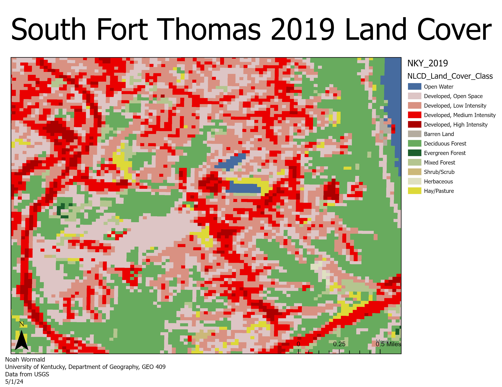

Caption for Cesium slideshow
South Fort Thomas Land Cover
South Fort Thomas, Campbell County Land Cover Data 2019, 2022
Development of South Fort Thomas
The southside of Fort Thomas is the historic side of the city. It is home to a former U.S Army base Fort Thomas which was active from 1890 to 1964. This led to the devlopment of south Fort Thomas being vastly different from the northside of the city. The fort was converted into a park while still having VA medical center and Army National Guard facilty still located in it. Many historic buildings still remain on the southside inclduing the city's most famous landmark, the orginal water tower from 1890. There is also a reservoir and a country club that take up a large area of the southide. As Fort Thomas continues to grow quickly the development of the southside will play a large part in the city's future.
Visualizations created from lidar data provided by KyFromAbove in ArcGIS Pro and Blender. Additional sources of information from name of source, April, 2023.
Page and visualizations created by Noah Wormald for GEO 409, Department of Geography, University of Kentucky. Spring 2024.
South Fort Thomas Land Cover Maps
Land Cover Type Map

Vegitation Cover Map